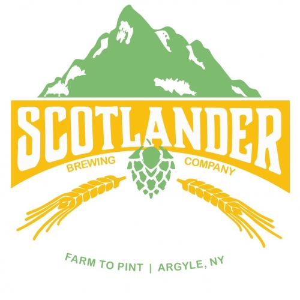

Craft beer, local artists and live music
You can find us on the trail, on our website scotlanderbc.com or on Facebook
453 County Rte 47
Argyle, New York 12809
(518) 232-3156
sbcargyle@icloud.com
Mapleland Farms - maplelandfarms.com - Pure NYS maple products produced on our 5th generation family farm
Craft beer, local artists and live music
You can find us on the trail, on our website canalstreetmarketplace.org or on Facebook
63 Canal Street
Fort Edward, NY, 12828
(518) 747-4169
canalstreetmarketplace@gmail.com
Aunt Rhea's Creations - Facebook - Email - Whimsical, fun jewelry
Rachel Vogel, Animal Adventure Author - Facebook - Award Winning Children's Books Featuring the Rafting Raccoon Series
A beacon of light for the arts community!
You can find us on the trail, on our website sandyhillartscenter.com or on Facebook
214 Main Street
Hudson Falls, New York, 12839
canalstreetmarketplace@gmail.com
Nature's Images by Brad Wanik - www.bradwanik.com - Wildlife, landscape and astro photography images to change the mood of any room
Silver by Paula Anne - Email - Hand forged original sterling silver jewelry designs